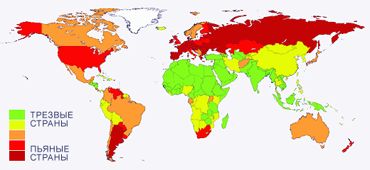

| ТРЕЗВАЯ ПЛАНЕТА |
|  |
|
Оказывается, большая часть населения планеты, а именно — две трети её жителей — живут трезво.
Боле 600 больших и малых народов мира не употребляют алкоголь, не курят и не применяют другие
наркотики. По сведениям Международной Академии Трезвости почти в 80 странах мира действует
закон трезвости.
Самые трезвые страны закрашены на карте зелёным цветом; те, в которых существуют проблемы с некоторыми наркотиками (например, в Китае ещё не решена проблема курения) — жёлтым, и т.д. Нам с вами пришлось жить в самом аду этого наркотизированного мира — Украина, как и Россия, и почти вся Европа, окрашена тревожной, тёмно-красной краской наркотических страданий. Вот список государств, в которых закон трезвости (различной степени строгости) действует на государственном уровне: Албания, Алжир, Бангладеш, Бахрейн, Бенин, Бруней, Буркина-Фасо, Бурунди, Бутан, Восточный Тимор, Гамбия, Гана, Гвинея, Гвинея-Бисау, Джибути, Египет, Замбия, Западная Сахара, Зимбабве, Индия, Индонезия, Иордания, Ирак, Иран, Исландия, Йемен, Камбоджа, Камерун, Катар, Кения, Китай, Коморские острова, Кот-д'Ивуар, Кувейт, Лаос, Лесото, Ливан, Ливия, Маврикий, Мавритания, Мадагаскар, Малави, Малайзия, Мали, Мальдивы, Марокко, Мьянма, Ненал, Нигер, Нигерия, Норвегия, Объединенные Арабские Эмираты, Оман, Пакистан, Палестина, Папуа-Новая Гвинея, Руанда, Саудовская Аравия, Свазиленд, Сейшельские острова, Сенегал, Сингапур, Сирия, Сомали, Судан, Сьерра-Леоне, Таиланд, Танзания, Того, Тунис, Туркменистан, Турция, Уганда, Центральноафриканская Республика, Чад, Швеция, Шри-Ланка, Экваториальная Гвинея, Эритрея, Эфиопия. Наиболее крупные народы, которые не употребляют алкоголь: китайцы (1 миллиард 125 миллионов человек); хиндустанцы (245 млн.); бенгальцы (189,15 млн.); панджабцы (99 млн.); бахарцы (97,6 млн.); телугу (74,5 млн.); таи (70 млн.); маратхи (66,5 млн.); тамилы (64,11 млн.); вьетнамцы (62,15 млн.); египтяне (54,6 млн.); турки (53,3 млн.); гуджаратцы (47 млн.); малаяли (35 млн.); ория (32,3 млн.); жауса (30,8 млн.); спамцы (30,13 млн.); кушиты (30 млн.); персы (25,9 млн.); сунды (24,5 млн.); алжирцы (22,2 млн.). Приверженцы 416 религий земного шара исповедуют трезвение. Среди них ислам (1 миллиард 126 миллионов человек); суннизм (850 млн.); индуизм (793 млн.); буддизм (500 млн.); вишнуизм (500 млн.); ханафиты (400 млн.); пятидесятничество (373 млн.); маликиты (200 млн.); шиваизм (198 млн.); шиизм (180 млн.) имамиты (140 млн.); новый век (100 млн.); кальвинизм (62 млн.); методизм (60 млн.); ассамблея Бога (22 млн.); амидаизм (19,7 млн.); адвентисты седьмого дня (16 млн.) и другие. Но, к сожалению, даже те страны, население которых ведёт здоровый, трезвый образ жизни, не защищены в полной мере от влияния процесса глобализации, который принёс им «культуру» массового потребления легальных и нелегальных наркотиков. Условно в мире можно выделить шесть концептуальных подходов к проблеме наркотизма: Китайская модель. Полностью решен вопрос с нелегальными наркотиками. За торговлю ими предусмотрена публичная смертная казнь (расстрел) при большом стечении народа (стадион, площадь и т. п.). Так же публично сжигается и изъятый наркотик. Алкоголь практически не потребляется. Последние несколько лет на каждого жителя Китая приходится по 50 грамм алкоголя (сравните: в Украине или России душевое потребление от 20 до 25 литров!). Правда, в Китае до сих пор есть проблемы с табакокурением, но у правительства есть намерение решить и табачную проблему. К странам с «китайской моделью» можно отнести также Индию, Вьетнам, Таиланд, Корею, Непал, Шри-Ланка, Мьянму и другие государства. Арабская модель. Потребление алкоголя, табака и других наркотиков в исламских государствах запрещено Кораном. За торговлю алкоголем предусмотрены жесткие меры, вплоть до смертной казни. За торговлю героином, марихуаной, ЛСД, кокаином и другими нелегальными наркотиками только смертная казнь. За курение табака предусмотрены меры наказания плетьми или ударами палок по пяткам. Поэтому алко-нарко-проблем в арабском мире практически не существует. Американская модель. Влияние на алко-наркотическую ситуацию с помощью огромного затратного финансового механизма. Имеются некоторые успехи в решении вопросов с табакокурением. В некоторых штатах (Юта, Мэн и др.) пропагандируется здоровый образ жизни. Ответственным органом за борьбу с наркотиками в США является ДЕА (администрация по борьбе с наркотиками), которая в качестве структурного подразделения входит в состав министерства юстиции США. ДЕА является федеральной службой и насчитывает 5,5 тыс. сотрудников (агентов), 4,5 тыс. из которых распределены по всем штатам и округам, а 1 тыс. агентов является офицерами связи ДЕА при посольствах США в подавляющем большинстве стран мира. Администрация по наркотикам имеет собственный информационный центр, расположенный в штате Колорадо на границе с Нью-Мексико. Поступающая от него информация анализируется разведывательным подразделением ДЕА, которое составляет стратегические и тактические прогнозы наркотической ситуации в стране, каналах транспортировки наркотиков и способов отмывания наркоденег. Техническая вооруженность подразделений по борьбе с наркотиками очень высокая. В собственности ДЕА имеется 50 самолетов, 65 вертолетов, 5 подводных лодок. Для контроля за поставками партий химических компонентов или наркотиков ДЕА устанавливает маломощные радиомаяки и даёт задание НАСА на слежение за ними. НАСА путем картографирования различных участков земного шара предоставляет информацию о местонахождении радиомаяка с точностью до 100 кв. м. ДЕА, так же как и ФБР, выполняет весь комплекс оперативно-розыскных мероприятий, в том числе наружные наблюдения и контроль телефонных переговоров самостоятельно, с помощью своей же оперативной техники, за счёт чего резко повышается уровень отдачи от проводимых мероприятий. Проблемой наркомании занимаются не только ДЕА, но и правоохранительные органы, т. е. местная полиция. Для решения данной проблемы свои усилия они нацеливают на выявление и разоблачение наркоманов и различных распространителей наркотиков. Ежегодно разоблачается от 2 до 3 тыс. подпольных лабораторий. Работа по их выявлению и ликвидации является самой опасной по той причине, что на 90-95% подходы к лабораториям и само оборудование заминировано. И несмотря на высокий уровень профессиональной подготовки агентов ДЕА, занимающихся данным направлением работы, от 2 до 10 подпольных лабораторий ежегодно взрываются при их захвате. Администрация уделяет серьёзное внимание как обеспечению глубокой разведки самих лабораторий при их разоблачении, так и обеспечению средствами надежной индивидуальной защиты личного состава. На вооружении каждого дивизиона Администрации по наркотикам имеется специальный автомобиль, в комплекте со специальным оборудованием. На ликвидацию одной подпольной лаборатории, уничтожения готового продукта, химических компонентов и используемого оборудования ДЕА затрачивает от 300 тыс. до 1,5 млн. долларов США. Существует также законодательная база для внебюджетного финансирования деятельности этих органов за счёт ареста активов (денег) и недвижимости, приобретённых на средства, полученные от преступной деятельности, что в отдельные годы превышает объёмы бюджетного финансирования. Администрация по борьбе с наркотиками ведёт не только активную наступательную работу по перекрытию каналов поступления наркотиков в незаконный оборот, ликвидации подпольных лабораторий, но и организует общую и индивидуальную профилактику наркомании, особенно среди детей и подростков. В стране создано около 2,5 тысяч общественных организаций, которые противостоят наркотизму. Проблемами табака и алкоголя занимается специальный институт — NIAAA, вопросами наркомании и токсикомании другой институт — NIDA, которые имеют хорошее бюджетное обеспечение. Развито движение АА и АН. В то же время, проблема героина, ЛСД, кокаина не решена. Более того, под патронажем Сороса в трех штатах (на западе США) даны послабления марихуане. Алкогольный вопрос в стране практически не решен. Огромные деньги, отпускаемые правительством США на профилактику и предотвращение незаконного оборота наркотиков, используются неэффективно, а иногда и вовсе нерационально. Американская модель применяется также в Канаде, Мексике, Великобритании, Германии, Финляндии и ряде других стран. Нидерландская модель. Имеются послабления в отношении марихуаны, которую можно приобрести в так называемых наркокофейнях. Во многих странах мира развит наркотуризм — наркоманы едут в Нидерланды из России, Украины, Бельгии, Германии, Франции и других государств, чтобы «отвести душу» в наркодурмане. В наркологии Нидерландов широко развита заместительная терапия — применение метадона. Трезвенное движение имеется, но развито слабо. Алко-нарко-проблема в целом не решена. А табачная и вовсе находится в тупике. В то же время, по законам Нидерландов, алкоголь относится к жестким наркотикам. По пути Нидерландов сегодня идут: Бельгия, Дания, Испания и Швейцария. Евразийская модель. Её исповедуют в России, Украине, Беларуси, Казахстане и ряде других стран СНГ. Рекламируется пиво, вино, водка и сигареты. Запрещены марихуана, ЛСД, кокаин, экстази, героин и другие наркотики. Население стран сильно наркотизируется и самоуничтожается. Смертность превышает рождаемость. Законы, указы и постановления выходят в качестве деклараций. В значительной степени страной правит алко- и наркомафия. Деньги на борьбу с наркоманией и наркобизнесом практически не выделяются. Алкоголя на душу населения потребляется от 20 до 25 литров в год. В ряды Вооруженных сил не допускается до 30% призывников, приверженных к нелегальным наркотикам. Идут процессы омоложения и криминализации пьянства, алкоголизма, наркоманий и токсикоманий. Скандинавская модель. К ней мы относим действия против алкоголя, табака и других наркотиков, применяемые в Швеции, Норвегии, Исландии и на Фарерских островах. Здесь осуществляется комплексный и системный подход в деле воспитания здорового и трезвого поколения. В этих странах по закону нельзя стать министром, педагогом или медиком, если ты потребляешь алкоголь, табак или какие-то другие наркотики. Сильно развито трезвенное движение. Социалистические правительства стран в своих действиях применяют «систему пресса» против любых наркоманов. В своей политике и действиях они гармонично воздействуют на систему антинаркотического законодательства и стимулируют общественные движения. В Швеции существует множество организаций, выступающих за трезвение нации: Национальная Федерация Трезвости в Швеции; Альянс Шведских Ассоциаций Трезвости; Совет Трезвости Христианских Церквей; Ассоциация Противников Опьяняющих Изделий; Шведский Филиал IOGT; Лига Юниоров IOGT; Ассоциация Железнодорожников-Трезвенников; Ассоциация Водителей-Трезвенников; Лига Молодежи Водителей-Трезвенников; Ассоциация Скаутов в движении за трезвость; Ассоциация занятий спортом на свежем воздухе; Академическая Ассоциация Трезвости; Ассоциация Синяя Лента; Лига Молодежи Синяя Лента; Ассоциация Трезвости для Шведских Учителей; Ассоциация Трезвенников Среди Шведских Полицейских; Ассоциация Трезвости Молодежи; Белая Лента (Женская Христианская Лига Трезвости); Церковь Комитета Милосердия и Социальной надежности; Церковь Шведской Молодежи; Ассоциация Мирян в Шведской Церкви; Шведская Благопристойная Церковь; Шведская Благопристойная Молодежная Церковь; Шведская Евангелическая Миссия (SEM) и SEM для молодежи; Шведская Баптистская Церковь; Молодежная Лига Баптистской Церкви; Церковь Методистов в Швеции; Ассоциация Молодежи Церкви Методистов; Армия Спасения; Молодежное Движение Армии Спасения; Церковная Миссия Шведского Альянса; Церковная Миссия Шведского Альянса для молодежи; Шведская Армия Спасения; УWCA/УМСА Ассоциация Скаутов; Orebro Баптистская Церковь; Orebro Баптистская Церковь для молодежи; Священная Миссия; Священная Миссия молодежи; Свободная Баптистская Церковь; Ansgar — Комитет. Примерно такая же картина в общественном движении за трезвость в Норвегии. Здесь действуют активно: Национальный Совет Ассоциаций Трезвости Норвегии; Синий Крест в Норвегии; Молодежный Синий Крест; Норвежские Ряды Здоровых Тамплиеров; Белая Лента (Женская Христианская Лига Трезвости); Норвежская Ассоциация Абсолютных Трезвенников; Абсолютные Трезвенники (Молодежь); Ассоциация Противников Опьяняющих Изделий; Лига Юниоров в IOGT в Норвегии; Ассоциация Водителей-Трезвенников; Лига Молодежи Водителей-Трезвенников; Ассоциация Молодежи Норвежских Здоровых Тамплиеров; Норвежская Гранд-Ложа IOGT; Норвежская Ассоциация Трезвенников; Норвежская Ассоциация Железнодорожников-Трезвенников; Ассоциация Трезвенников среди норвежских учителей; Ассоциация Трезвенников среди норвежских священников; Национальный Альянс ресторанов, отелей и общественных мест, обслуживающих только безалкогольными напитками; Совет Трезвости Христианских Церквей. Совет имеет 33 членские организации, среди которых Норвежская Лютеранская церковь, большинство неангликанских церквей и многие Христианские организации. Сегодня всё образование и здравоохранение в Норвегии и Швеции бесплатны. Тюрьмы пусты, поскольку нет клиентуры. Алкоголь и табак продают очень редко — имеется по одному специализированному магазину на область (округ). Причем всё «зелье» дороже нашего алкоголя и табака в 50-100 раз. (А.Н. Маюров) http://www.trezvost.ru/1/trezvost-rasum/index.php?page=75 |